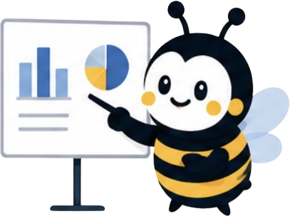
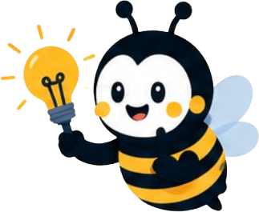

Informasjon kopieres for hånd
Fra e-post til CRM, regneark eller kalender.
NettsiderAutomatiseringSystemer
Vi hjelper deg med nettsider, automatisering og digitale systemer som sparer tid og manuelt arbeid.
Første steg er en uforpliktende kartlegging.
Fra nettsiden
Data på riktig sted
Kunden får beskjed
Ingenting blir glemt
Teknologi for arbeidshverdagen, ikke teknologi for teknologiens skyld.
Kjenner dere igjen dette?
Små, manuelle oppgaver virker uskyldige. Når de gjentas hver dag, blir de en dyr og frustrerende del av driften.
Fra e-post til CRM, regneark eller kalender.
Data ligger spredt og oversikten forsvinner mellom verktøy.
Henvendelser, oppgaver og kunder får svar senere enn de burde.
Tre fagområder. Én arbeidsflyt.
Nettsider, automatisering og systemer henger sammen. Derfor ser vi på helheten før vi velger løsning.
Moderne nettsider som bygger tillit, fanger henvendelser og kobler kundereisen videre.
Vi kobler sammen oppgaver og verktøy så informasjon flyttes, svar sendes og oppfølging skjer automatisk.
Skreddersydde verktøy når standardløsningen ikke passer måten bedriften faktisk jobber på.
Vi starter i arbeidshverdagen, ikke i verktøykassen.
Start med en kartleggingVi kartlegger oppgaver, flaskehalser og systemer som ikke henger sammen.
Ikke alle problemer trenger AI eller spesialbygget programvare. Vi velger det som faktisk passer.
Vi utvikler nettsiden, systemet eller automatiseringen og får verktøyene til å samarbeide.
Dere får bedre oversikt, færre manuelle steg og en flyt som fungerer i praksis.
Se forskjellen
Et enkelt eksempel på hvordan manuelle mellomledd kan forsvinne.
Kunden sender skjema
09:04En ansatt leser e-posten
Når det passerInformasjon kopieres til CRM
ManueltSvar og oppfølging opprettes
SenereFire manuelle steg. Flere steder å miste fart.
CRM oppdatert
Kunden får svar
Ansvarlig varsles
Oppfølging planlagt
Alt skjer med én gang. Den ansatte tar over når det faktisk trengs.
Eksempler på hva vi kan løse
Dette er løsningseksempler, ikke oppdiktede kundecaser. Den riktige kombinasjonen avhenger av arbeidshverdagen deres.
Et kontaktskjema som ikke bare sender en e-post, men starter hele kundereisen.
Samle kunder, oppgaver og nøkkelinformasjon i ett oversiktlig verktøy.
Snakk med oss
Send informasjon, påminnelser og neste steg til riktig tid uten manuell oppfølging.
Snakk med ossLa systemet hente ut, sortere og sende informasjonen videre til riktig arbeidsflyt.
Vi lover ikke magiske prosenter. Vi bygger konkrete forbedringer som merkes i den daglige driften.
Gjentatte steg flyttes fra mennesker til systemet.
Henvendelser sendes videre uten unødvendig venting.
Informasjon samles der arbeidet faktisk skjer.
Oppfølging opprettes og varsles til riktig tid.
Kling er ikke et tradisjonelt webbyrå og ikke et generisk «AI-byrå».
Vi kombinerer nettsider, automatisering og systemer fordi utfordringen sjelden stopper i ett verktøy. Først forstår vi arbeidsflyten. Deretter bygger vi den enkleste løsningen som fjerner friksjonen.
Teknologien er verktøyet. Resultatet er produktet.

Kling finnes for å gjøre arbeidshverdagen din enklere.
Vi tror god teknologi skal fjerne steg, ikke legge til nye. Derfor setter vi oss inn i hvordan dere jobber, forklarer mulighetene uten unødvendig fagspråk og bygger løsninger som fungerer i den virkelige arbeidshverdagen.
Problem først Vi løser det som faktisk skaper friksjon.
Enkelt forklart Dere skal forstå både valget og verdien.
Bygget for praksis Systemet skal fungere når arbeidsdagen er travel.
Et enkelt første steg
Fortell kort om arbeidshverdagen. Vi ser etter muligheter for mindre manuelt arbeid og bedre flyt.
Start en uforpliktende kartlegging